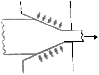
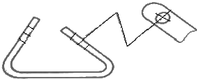
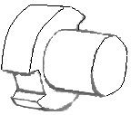
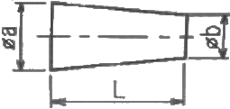
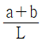
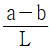

제선기능사 (2015-01-25 기출문제)
1과목: 금속재료일반
1. 4%Cu, 2%Ni 및 5%Mg 이 첨가된 알루미늄 합금으로 내연기관용 피스톤이나 실린더 헤드 등에 사용되는 재료는?
- Y 합금
- 라우탈(lautal)
- 알클래드(alclad)
- 하이드로날륨(hydronalium)
(정답률: 87%)

2. 금속의 결정구조를 생각할 때 결정면과 방향을 규정하는 것과 관련이 가장 깊은 것은?
- 밀러지수
- 탄성계수
- 가공지수
- 전이계수
(정답률: 78%)
3. 구리 및 구리 합금에 대한 설명으로 옳은 것은?
- 구리는 자성체이다.
- 금속 중에 Fe 다음으로 열전도율이 높다.
- 황동은 주로 구리와 주석으로 된 합금이다.
- 구리는 이산화탄소가 포함되어 있는 공기 중에서 녹청색 녹이 발생한다.
(정답률: 69%)
4. Y합금의 일종으로 Ti과 Cu를 0.2% 정도씩 첨가한 합금으로 피스톤에 사용되는 합금의 명칭은?
- 라우탈
- 엘린바
- 문쯔메탈
- 코비탈륨
(정답률: 66%)
5. 다음 중 비중(specific gravity)이 가장 작은 금속은?
- Mg
- Cr
- Mn
- Pb
(정답률: 81%)
6. 다음 비철금속 중 구리가 포함되어 있는 합금이 아닌 것은?
- 황동
- 톰백
- 청동
- 하이드로날륨
(정답률: 76%)
7. 기체 급랭법의 일종으로 금속을 기체 상태로 한 후에 급랭하는 방법으로 제조되는 합금으로서 대표적인 방법은 진공 종착법이나 스퍼터링법 등이 있다. 이러한 방법으로 제조되는 합금은?
- 제진 합금
- 초전도 합금
- 비정질 합금
- 형상 기억 합금
(정답률: 74%)
8. 저용융점 합금의 용융 온도는 약 몇 ℃이하 인가?
- 250℃ 이하
- 450℃ 이하
- 550℃ 이하
- 650℃ 이하
(정답률: 79%)
9. 특수강에서 다음 금속이 미치는 영향으로 틀린 것은?
- Si : 전자기적 성질을 개선한다.
- Cr : 내마멸성을 증가시킨다.
- Mo : 뜨임메짐을 방지한다.
- Ni : 탄화물을 만든다.
(정답률: 67%)
10. 공석강의 탄소함유량은 약 얼마인가?
- 0.15%
- 0.8%
- 2.0%
- 4.3%
(정답률: 71%)
11. 오스테나이트계 스테인리스강에 첨가되는 주성분으로 옳은 것은?
- Pb-Mg
- Cu-Al
- Cr-Ni
- P-Sn
(정답률: 81%)
12. 용융금속을 주형에 주입할 때 응고하는 과정을 설명한 것으로 틀린 것은?
- 나뭇가지 모양으로 응고하는 것을 수지상정이라 한다.
- 핵 생성 속도가 핵 성장 속도보다 빠르면 입자가 미세해 진다.
- 주형에 접한 부분이 빠른 속도로 응고하고 차차 내부로 가면서 천천히 응고한다.
- 주상 결정 입자 조직이 생성된 주물에서는 주상결정 입내 부분에 불순물이 집중하므로 메짐이 생긴다.
(정답률: 63%)
13. 그림과 같은 소성가공법은?

- 압연가공
- 단조가공
- 인발가공
- 전조가공
(정답률: 81%)
14. 재진 재료에 대한 설명으로 틀린 것은?
- 제진 합금에는 Mg-Zr, Mn-Cu 등이 있다.
- 제진 합금에서 제진 기구는 마텐자이트 변태와 같다.
- 제진 재료는 진동을 제어하기 위하여 사용되는 재료이다.
- 제진 합금이란 큰 의미에서 두드려도 소리가 나지 않는 합금이다.
(정답률: 66%)
15. 다음 철강 재료에서 인성이 가장 낮은 것은?
- 회주철
- 탄소공구강
- 합금공구강
- 고속도공구강
(정답률: 73%)
2과목: 금속제도
16. 실물을 보고 프리핸드로 그린 도면은?
- 계획도
- 제작도
- 주분도
- 스케치도
(정답률: 94%)
17. KS B ISO 4287 한국산업표준에서 정한 “거칠기 프로파일에서 산출한 파라미터”를 나타내는 기호는?
- R-파라미터
- P-파라미터
- W-파라미터
- Y-파라미터
(정답률: 76%)
18. 상면도라 하며, 물체의 위에서 내려다 본 모양을 나타내는 도면의 명칭은?
- 배면도
- 정면도
- 평면도
- 우측면도
(정답률: 89%)
19. 수면이나 유면 등의 위치를 나타내는 수준면선의 종류는?
- 파선
- 가는 실선
- 굵은 실선
- 1점 쇄선
(정답률: 65%)
20. 도면에서 중심선을 꺾어서 연결 도시한 투상도는?

- 보조 투상도
- 국부 투상도
- 부분 투상도
- 회전 투상도
(정답률: 75%)
21. 그림과 같은 물체를 제3각법으로 그릴 때 물체를 명확히 하게 나타낼 수 있는 최소 도면 개수는?

- 1개
- 2개
- 3개
- 4개
(정답률: 79%)
22. 다음 가공방법의 기호와 그 의미의 연결이 틀린 것은?
- C-주조
- L-선삭
- G-연삭
- FF-소성가공
(정답률: 77%)
23. 제도용지에 대한 설명으로 틀린 것은?
- A0 제도용지의 넓이는 약 1m2이다.
- B0 제도용지의 넓이는 약 1.5m2이다.
- A0 제도용지의 크기는 594×841이다.
- 제도용지의 세로와 가로의 비는 1:√2이다.
(정답률: 77%)
24. 척도가 1:2인 도면에서 실제 치수 20mm인 선은 도면상에 몇 mm로 긋는가?
- 5mm
- 10mm
- 20mm
- 40mm
(정답률: 80%)
25. 끼워 맞춤에 관한 설명으로 옳은 것은?
- 최대 죔새는 구멍의 최대 허용 치수에서 축의 최소 허용 치수를 뺀 치수이다.
- 최소 죔새는 구멍의 최소 허용 치수에서 축의 최대 허용 치수를 뺀 치수이다.
- 구멍의 최소 치수가 축의 최대 치수보다 작은 경우 헐거운 끼워 맞춤이 된다.
- 구멍과 축의 끼워 맞춤에서 틈새가 없이 죔새만 있으면 억지 끼워 맞춤이 된다.
(정답률: 74%)
26. 다음 도형에서 테이퍼 값을 구하는 식으로 옳은 것은?

- b/a
- a/b


(정답률: 81%)
27. 2N M50×2-6h 이라는 나사의 표시 방법에 대한 설명으로 옳은 것은?
- 왼나사이다.
- 2줄 나사이다.
- 유니파이 보통 나사이다.
- 피치는 1인치당 산의 개수로 표시한다.
(정답률: 84%)
28. 파이넥스 유동로의 환원율에 영향을 미치는 인자가 아닌 것은?
- 환원가스 성분 중 CO, H2 농도
- 광석 1t당 환원가스 원단위
- 유동로 압력
- 환원가스 온도
(정답률: 55%)
29. 고로의 수리를 위하여 일시적으로 송풍을 중지시키는 것은?
- hanging
- blowing in
- ventilationn
- blowing out
(정답률: 85%)
30. 산업안전보건법에서는 공기 중의 산소 농도가 몇 % 미만인 상태를 “산소결칩”으로 규정하고 있는가?
- 15
- 18
- 20
- 23
(정답률: 80%)
3과목: 제선법
31. 다음 중 염기성 내화물에 해당되는 것은?
- 마그네시아질
- 점토질
- 샤모트질
- 규산질
(정답률: 77%)
32. 고로조염 중 배가스 처리장치를 통해 가장 많이 배출되는 가스는?
- N2
- H2
- CO
- CO2
(정답률: 63%)
33. 고로에서 인(P)성분이 선철 중에 적게 유입되도록 하는 방법 중 틀린 것은?
- 금속조업을 한다.
- 노삼온도를 높인다.
- 염기도를 높인다.
- 장입물 중 인(P) 성분을 적게 한다.
(정답률: 57%)
34. 소결기에서 연속 조업을 할 수 있는 것은?
- 드와이트-로이드식
- 그리나 발트식
- 로타리 킬른식
- AIB식
(정답률: 86%)
35. 출선구에서 나오는 용선과 광재를 분리시키는 역할을 하는 것은?
- 출재구(tapping hole)
- 더비 바(dummy bar)
- 스키머(skimmer)
- 당도(runner)
(정답률: 84%)
36. 산소 부화에 의한 효과로 틀린 것은?
- 질소 강소에 의해 발열량을 감소시킨다.
- 바람 구멍 앞의 온도가 높아진다.
- 코크스의 연소 속도가 빠르다.
- 출선량을 증대시킨다.
(정답률: 52%)
37. 코크스 중 회분이 많을 때 고로에서 일어나는 현상은?
- 석회석 슬래그의 양이 감소한다.
- 행깅(hanging)을 방지한다.
- 코크스비가 증가한다.
- 출선량이 증가한다.
(정답률: 67%)
38. 코크스 중에 회분이 7%, 휘발분이 5%, 수분이 4% 있다면 고정탄소의 양은 몇 %인가?
- 54%
- 64%
- 74%
- 84%
(정답률: 81%)
39. 생 펠릿 성형기의 특징이 아닌 것은?
- 틀이 필요없다.
- 가압을 필요로 하지 않는다.
- 연속조업이 불가능하다.
- 물리적으로 원심력을 이용한다.
(정답률: 67%)
40. 선철 중의 탄소의 용해도를 증가시키는 원소가 아닌 것은?
- V
- Si
- Cr
- Mn
(정답률: 57%)
41. 다음 중 수세법에 대한 설명으로 옳은 것은?
- 자철광 또는 사철광을 선광하여 맥석을 분리하는 방법
- 갈철광 등과 같이 진흙이 붙어 있는 광석을 물로 씻어서 품위를 높이는 방법
- 중력에 의하여 큰 광석은 가라앉히고, 작은 광석은 뜨게 하여 분리하는 방법
- 비중의 차를 이용하여 광석으로부터 맥석을 선별, 제거하거나 또는 광석 중의 유효 광물을 분리하는 방법
(정답률: 78%)
42. 고로 살부에서부터 하부로의 순서가 옳은 것은?
- 로구→샤프트→로복→보시→로상
- 로구→보시→샤프트→로복→로상
- 로구→샤프트→보시→로복→로상
- 로구→로복→샤프트→로상→보시
(정답률: 69%)
43. 출선된 용선은 탕도에서 슬래그(광재)와 비중차로 분리된다. 용선과 슬래그의 각각 비중은 약 얼마인가?
- 용선 : 8.7, 슬래그 : 4.5~4.6
- 용선 : 7.9, 슬래그 : 4.0~4.1
- 용선 : 7.5, 슬래그 : 3.6~3.7
- 용선 : 7.0, 슬래그 : 2.6~2.7
(정답률: 62%)
44. 고로 내에서 로내벽 연와를 침식하여 로체 수명을 단축시키는 원소는?
- Zn
- P
- Al
- Ti
(정답률: 50%)
45. 작업자의 안전심리에서 고려되는 가장 중요한 요소는?
- 지식 정도
- 안전 규칙
- 개성과 사고력
- 신체적 조건과 기능
(정답률: 65%)
4과목: 소결법
46. 수분이나 탄산염 광석 중의 CO2 등 지련에 방해가 되는 성분을 가열하여 추출하는 조작은?
- 단광
- 괴성
- 소결
- 하소
(정답률: 70%)
47. 여러 종류의 철광석을 혼합하여 적치하는 블랜딩(Blending)의 이점이 아닌 것은?
- 입도를 균일하게 한다.
- 원료의 성분을 안정화시킨다.
- 야드 적치시 편석이 잘 되게 한다.
- 양이 적은 광종도 적절히 사용할 수 있다.
(정답률: 63%)
48. 소결용 연료인 코크스의 구비 조건이 아닌 것은?
- 소결성이 좋을 것
- 발열량이 높을 것
- 적당한 입도를 가질 것
- 수분함량과 P.S의 양이 많을 것
(정답률: 82%)
49. 소결설비 중 윈드 박스(wind box)의 역할은?
- 흡인장치
- 점화장치
- 집진장치
- 파쇄장치
(정답률: 83%)
50. 광물을 분쇄시켜 미립자를 물에 넣고 적당한 부선제를 첨가하여 기포를 발생시켜 광물과 맥석을 분리하는 방법은?
- 부유 선광
- 자력 선광
- 중액 선광
- 비중 선광
(정답률: 75%)
51. 소결장치 중 드럼믹서(Drum mixer)의 역할이 아닌 것은?
- 혼합
- 조립
- 조습
- 파쇄
(정답률: 76%)
52. 소결원료의 배합시 의사입화에 대한 설명으로 틀린 것은?
- 품질이 향상된다.
- 회수율이 증가한다.
- 생산성이 증가한다.
- 원단위가 증가한다.
(정답률: 74%)
53. 다음 중 코크스를 견류하는 과정에 발생되는 가스의 명칭은?
- BFG
- LDG
- COG
- LPG
(정답률: 82%)
54. 덩어리로 된 괴광에 필요한 성질에 대한 설명으로 옳은 것은?
- 다공질로 노 안에서 환원이 잘 되어야 한다.
- 로에 잠입 및 감하시에는 잘 분쇄되어야 한다.
- 선철에 품질을 높일 수 있는 황과 인이 많아야 한다.
- 정결제에는 알칼리류를 함유하고 있어야 하며, 열팽창 및 수축에 의한 붕괴를 일으켜야 한다.
(정답률: 62%)
55. 삭탄의 분쇄 입도의 영향에 대한 설명으로 틀린 것은? (단, HGI : Hardgrove Grindability Index이다.)
- 수분이 많으면 파쇄하기 어렵다.
- 파쇄기 급량이 많으면 조파쇄가 된다.
- 석탄의 HGI가 작으면 파쇄하기 쉽다.
- 분쇄전 석탄입도가 크면 분쇄 후 입도가 크다.
(정답률: 64%)
56. 자용성 소결광이 고로 원료로 사용될 때 설명으로 옳은 것은?
- 피환원성이 감소한다.
- 코크스비가 저하한다.
- 노내 탈황률이 감소한다.
- 이산화탄소의 발생으로 직접 환원이 잘 된다.
(정답률: 54%)
57. 코크스로에 원료를 잠입하여 압출될 때까지 석탄이나 코크스가 노내에 머무르는 시간을 무엇이라 하는가?
- 탄화시간
- 잠입시간
- 압출시간
- 방치시간
(정답률: 64%)
58. 집진기의 형식 중 집진효율이 가장 우수한 것은?
- 중력 집진장치
- 전기 집진장치
- 관성력 집진장치
- 원심력 집진장치
(정답률: 77%)
59. 고로 내 코크스의 역할에 해당되지 않는 것은?
- 통기성, 통기성 향상
- 연소를 통한 열원제
- 철광석의 산화반응 촉진
- 선철, 슬래그 간의 열교환 매체
(정답률: 71%)
60. 고온에서 원료 중의 맥석성분이 용체로 되어 고체상태의 광석입자를 결합시키는 소결반응은?
- 맥석결합
- 용융결합
- 확산결합
- 화합결합
(정답률: 76%)
Y 합금은 알루미늄 합금 중에서도 강도와 내식성이 뛰어나며, 열처리에 의해 더욱 강도를 높일 수 있는 재료입니다. 따라서 내연기관용 피스톤이나 실린더 헤드 등과 같이 고온과 고압에서 작동하는 부품에 적합한 재료로 사용됩니다. 또한, Cu, Ni, Mg 등의 첨가물로 합금화하여 더욱 강도와 내식성을 높였습니다.